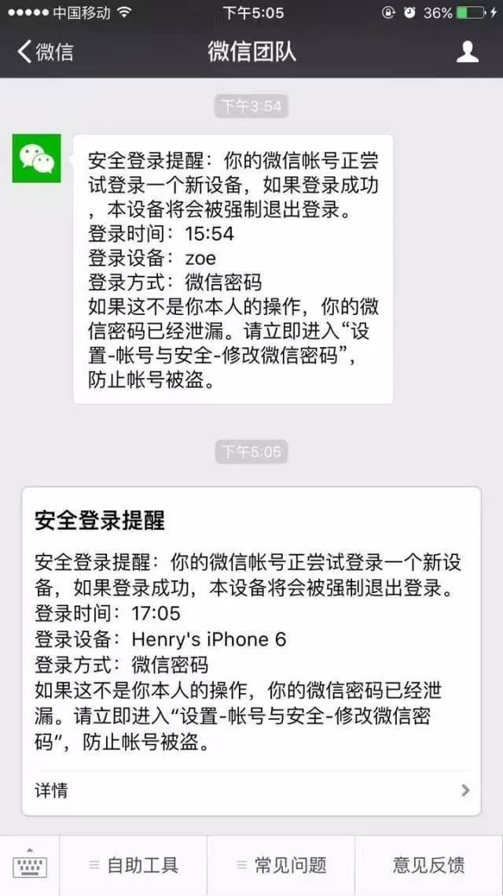

你应保证你的投诉行为基于善意，并代表你本人真实意思。腾讯作为中立的平台服务者，收到你投诉后，会尽快按照相关法律法规的规定独立判断并进行处理。腾讯将会采取合理的措施保护你的个人信息；除法律法规规定的情形外，未经用户许可腾讯不会向第三方公开、透露你的个人信息。
根据《中华人民共和国民法典》的规定，权利人在通知网络服务提供者时应当提供权利人的真实身份信息。因此，当你提交侵权投诉及冒充他人投诉时，我们根据你的主体类型，收集你的相关信息（含敏感个人信息），包括你的姓名或名称、证件号码或者组织证件号、证件正反面照片、公司或组织证件照片，收集前述内容的目的在于核验你的身份信息的真实性。如果你委托代理人进行投诉，我们还将收集代理人的姓名、证件号码、证件正反面照片、授权委托书照片，收集前述信息在于核验代理人信息的真实性。你可以拒绝提供，如果拒绝提供，我们可能无法对你的投诉进行评估，但不影响你对微信其他功能的正常使用。
此外，为了对你的投诉予以评估，我们也会收集你主动提交的聊天记录、投诉内容、补充证明材料照片。你可以拒绝提供，如果拒绝提供，我们可能无法对你的投诉进行充分评估，但不影响你对微信其他功能的正常使用。
若你提交的是侵权投诉，请注意：
1. 权利人及其代理人知悉并了解侵权投诉是一项严肃的法律行为，平台将根据法律法规、投诉内容和证据等进行评估审核，尽力保障每一位权利人的合法权益。但侵权投诉的评估审核结果与投诉次数无关联，多次或多人重复或批量投诉并不能改变或提升侵权投诉通过率。
2. 为了更好地维护权利人的合法权益及正常侵权投诉，保障系统安全及正常运作，权利人及其代理人不得采取可能会严重影响其他用户合法权益、阻碍平台系统的安全正常运作的方式进行投诉，包括但不限于使用外挂、插件、第三方软件、系统、自动化程序等进行投诉等。
一经发现，上述投诉将被平台视为无效投诉。同时不排除会采取包括但不限于限制频次等、记入非正常投诉名单、调整投诉处理顺序、直至直接拒绝、处罚投诉账号等特殊处理机制或限制、处理措施。
3. 为各权利人的合法权益得以保障，相关投诉能有效提交，如平台有合理理由相信投诉存在以下情形，将有权根据实际情况调整处理方式。包括但不限于：
（1）明知、应知不构成侵权或明显缺乏权利基础和事实依据而进行投诉；
（2）平台已告知欠缺处理依据仍不断重复投诉且无实质补充等情形；
（3）多次或大量提交侵权投诉，但整体通过率低或涉嫌滥用投诉；
（4）非合理且正当理由，对平台正常处理其他权利人侵权投诉造成不利影响的情形；
（5）其他平台有理由认为存在不合理、滥用投诉的情形。
一经发现，将不排除采取特殊的处理机制或限制措施，包括但不限于限制频次、记入非正常投诉名单、调整侵权投诉单处理顺序等，由此将可能导致侵权投诉不可高频提交、无法通过或审核评估时效延长等效果。
4. 如由于特殊原因造成平台处理能力过载，包括但不限于网络因素、设备原因、投诉量短期激增等，平台的处理与反馈也可能会有时效调整或迟延。
如果发现好友的微信账号出现行为异常：如突然发布欺诈或其他刷屏、违规信息，或对多个好友同时要求转账等，则他的账号可能被盗。这时，请第一时间联系好友，并指引他根据下面的方法操作，尽快安全地找回账号，避免造成更大损失。
1. 尝试通过手机号+微信密码、微信号+微信密码 、QQ+QQ密码、手机号+短信验证码、邮箱+微信密码中任一种方式尽快登上微信；
2. 登上微信后，进入设置-账号与安全-修改微信密码。保险起见，如果微信绑定了QQ，访问QQ安全中心修改QQ密码；
为了防止账号再次出现问题，也请对手机进行安全检查，并卸载可疑软件。
1. 马上访问weixin110.qq.com，进行账号冻结。
2. 冻结后，对手机病毒、泄漏密码原因进行排查。同时用电话、短信等方式通知亲友，微信号被盗，以免坏人向亲友行骗。
3. 确认当前手机环境安全后，再次访问weixin110.qq.com，进行账号解冻。
4. 解冻后，尽快重新登录微信，并及时修改微信密码。
验证码不要提供给任何其他人，除非能够百分百确认此时对方的真实身份。
设置复杂密码，不复用密码，最好定期更新密码。微信登录密码不和其他软件、网站登录密码重复使用，避免坏人通过其他软件、网站数据库泄露而获取到你的微信密码。
不点击可疑链接，不安装非官方软件，使手机保持安全状态。
对于微信账号，建议最好设置声纹密码、绑定常用手机号，这样会加强你的微信账号安全性。
最后，对于用户自己，请留意微信团队的安全登录提醒
假如微信用户看到微信团队推送的如下消息，那就要小心了，这说明你的账号密码很可能已经泄露，坏人正在尝试登录你的微信。
这时，请按照上面的流程，赶紧去修改密码吧。修改密码时应该注意以下几点：
设置一个全新的、未在其他网站和APP使用过的密码。
微信密码、QQ密码（微信绑定了QQ的话）都要重新设置。
定期更新密码、发现异常立即更新密码。
